自从有了核。
金家威慑八方，可以逼着特朗普屁颠屁颠来会晤，也可以逼着某国边为他撒钱擦屁股，边被全世界唾骂。
看着金老大不拘一格的发型、傲视群雄的眼神，看着同仇敌忾、随时甘作炮灰的民众。
谁都心里害怕，搞不好，金老大会让全世界陪葬。
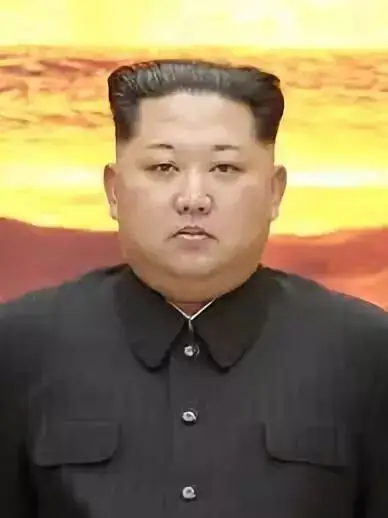
因此，韩国想尽办法安插间谍来了解朝方核武器情况。
要渗透到那个互相举报、高度警惕的神奇国度，想一想都觉得难。
而在历史中，曾有一个代号「黑金星」的南韩间谍不仅成功渗透到朝鲜高层，还受到过金正日的接见。
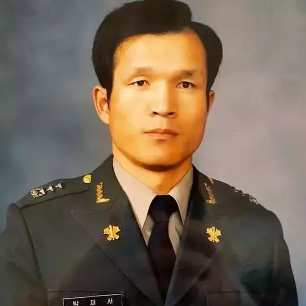
△朴采书，代号黑金星，其在军队时的照片
当韩国导演尹钟彬无意中发现黑金星的事迹后，他说：
我发现了这个真实故事，实在很想知道，怎么样的一个间谍，能有办法左右整个朝鲜半岛政局，就层层去挖掘，没想到背后的故事竟如此惊悚。
于是尹钟彬将黑金星的事迹改编为电影《特工》（又名：北风）。
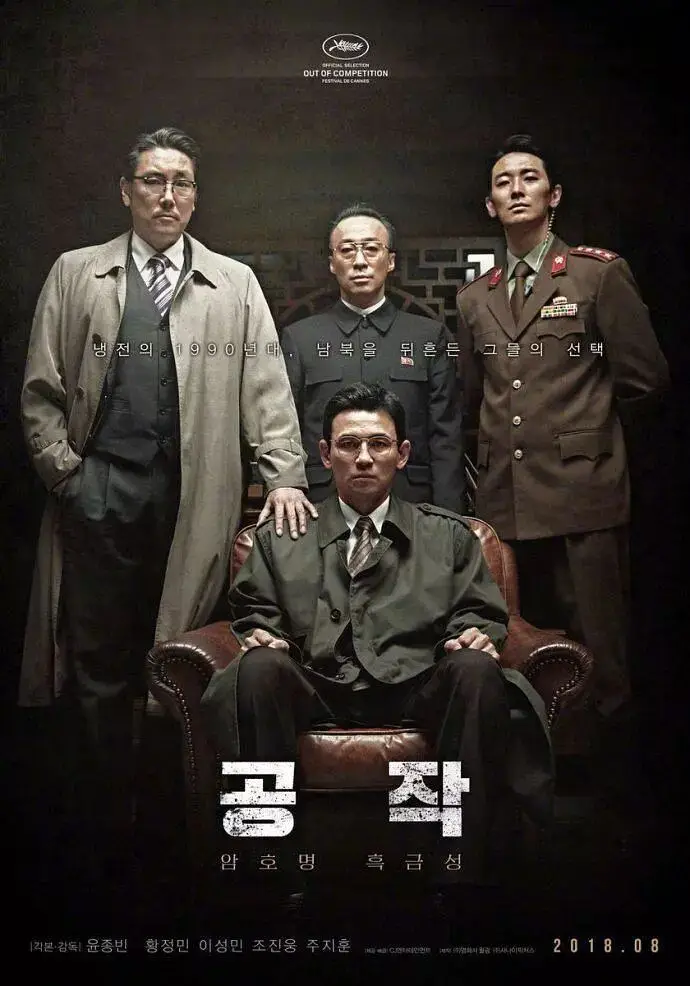
电影主演都是老戏骨，扮演黑金星的是韩国青龙奖影帝黄政民，他曾主演过《新世界》、《军舰岛》和《哭声》。
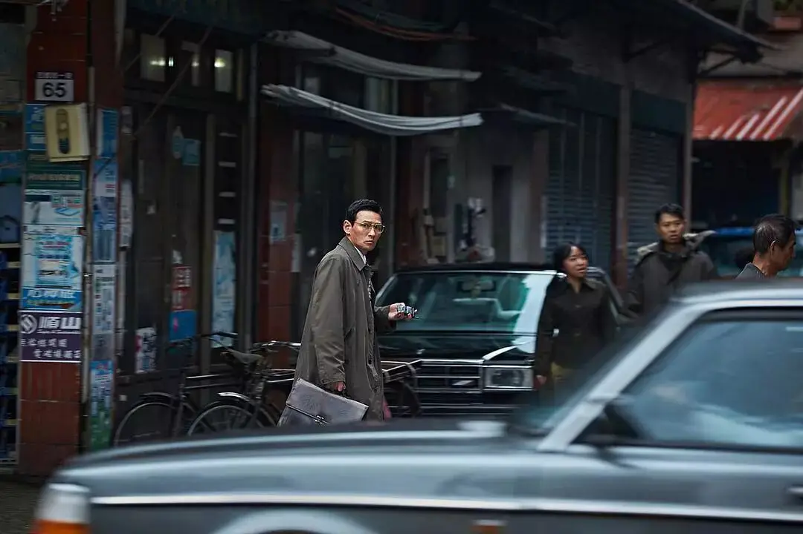
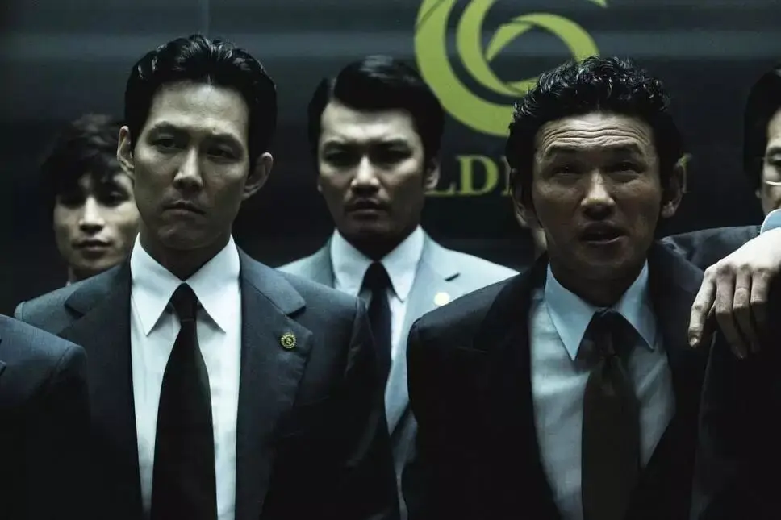
△《新世界》剧照，黄政明饰演了一位放荡不羁、有情有义的大哥
和黑金星演对手戏的是李星民，他曾在《辩护人》中饰演的良心记者让人印象深刻。
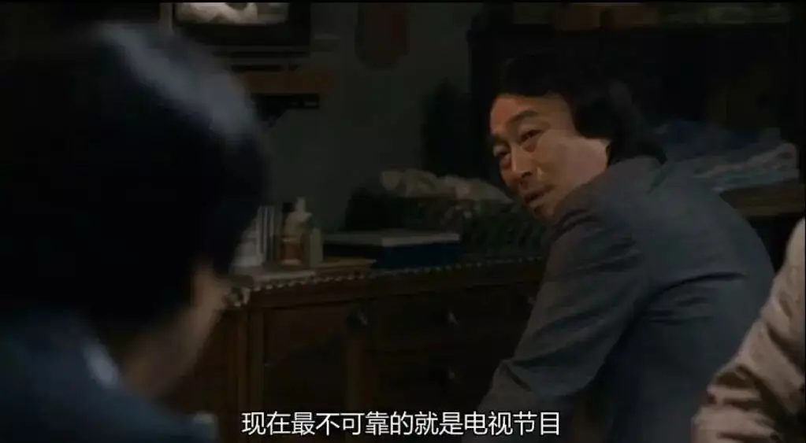
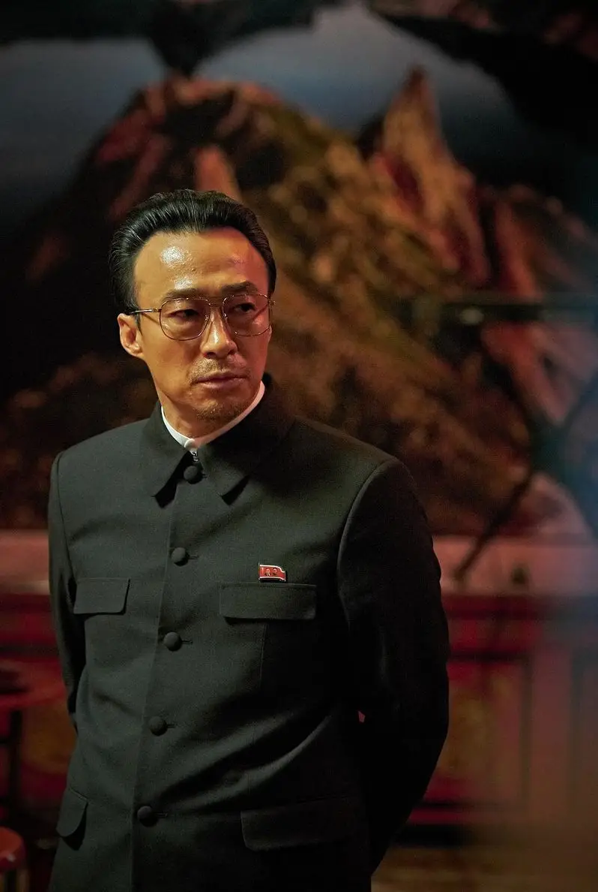
导演对故事的商业化改编相当出彩，虽没有动作戏和飙车场景，但剧情一波三折、扣人心弦。
1990年代。
黑金星由一名军人自愿转到韩国军方情报机构做间谍。
这个转型几乎是自断前程甚至是自寻死路。
但是黑金星决心很大，因为他坚信，如果能够解决好朝核问题，就能换来整个朝鲜半岛的和平。
为此他几乎放弃了所拥有的一切。
为了骗过朝鲜安插在韩国间谍的眼线，他四处找战友借钱，强迫自己喝酒、出入赌场，最终因为还不上钱而信用破产，成为了一个唯利是图、摸爬滚打的下海商人。
毕竟，“洗白”自己的身份是成为间谍的开始。
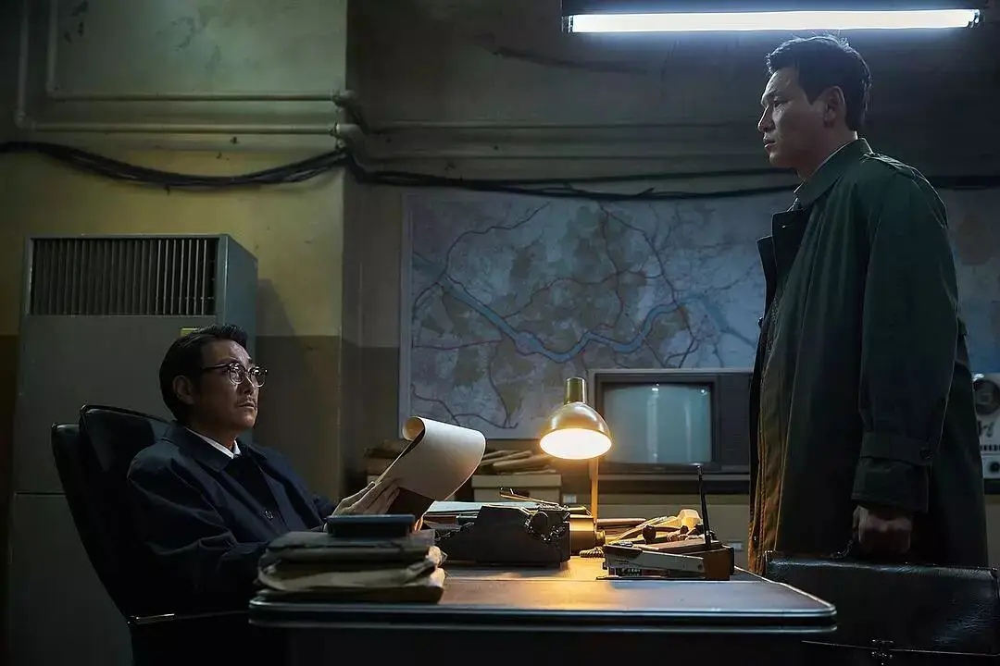
△黑金星与自己的上级崔室长
当韩国得知朝鲜已经拥有核后，高层决定要黑金星渗入朝鲜高层获取进一步的情报。
为此，黑金星“成了”一个来北京做生意的韩国商人。
他的目标是和朝鲜对外经济审议处李处长搭上线，李处长是金日成综合大学第一名毕业的优等生，负责朝鲜全部的外汇工作。
他在朝鲜享有很高的声望，是目标人群中唯一一个可以接触到金正日的人。
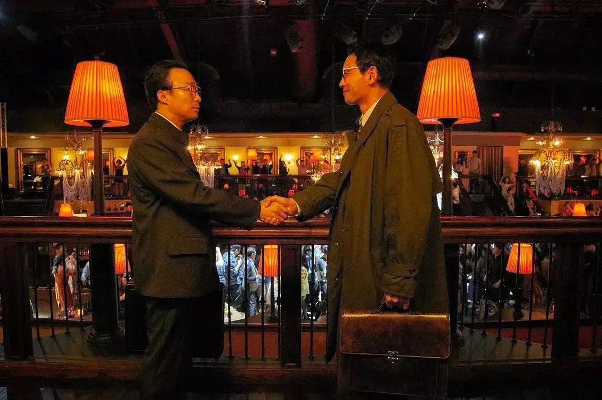
从黑金星开始试图与朝鲜方联系的那一刻开始，他就处于被监听和跟踪中。
朝方对他各种挖坑试探，稍有不慎不仅会前功尽弃，小命也会玩完。
黑金星靠近金正日的过程，就像玩扫雷一样，每走近一步，危险就会越大，具体的情节要留给大家去观赏。
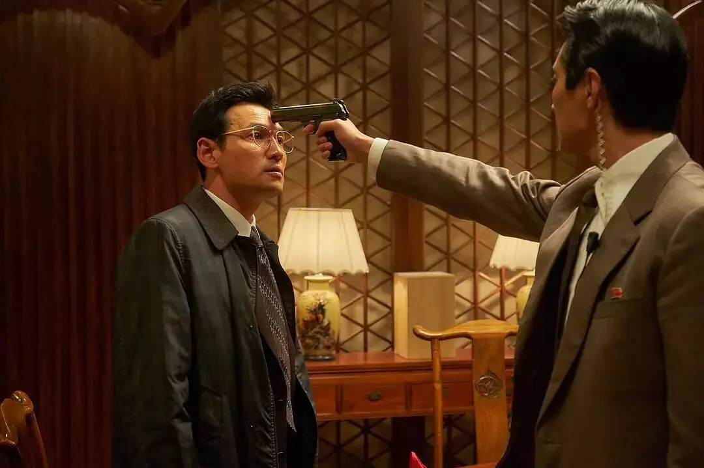
除了谍战片的类型化处理，这部电影依旧沿袭了韩国电影的两大特点：自黑和催泪。
电影中的朝鲜我们非常熟悉，外表光鲜亮丽，到处都是正能量的标语和领袖雕像，但盛世之下都是蝼蚁。
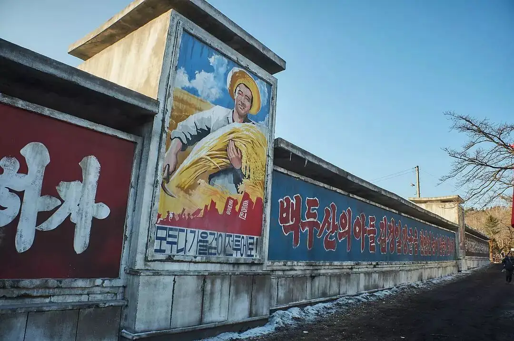
街道到处是穿着破烂、饥肠辘辘的人，很多因疾病饥饿死去的人被丢在垃圾堆里，然后和垃圾一起被掩埋。
仿佛死去的不是人，只是丢在垃圾堆里变质发臭的死猪肉。
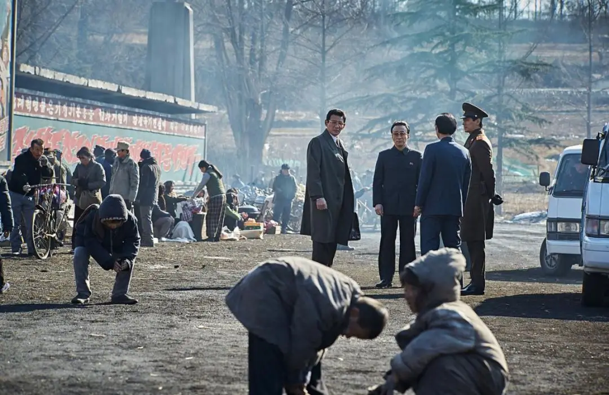
除了物质上的匮乏，朝鲜人在精神上处于高度紧张之中，他们活在一个互相举报的世界中。
电影中一个政府官员看到饿殍满地时，心里非常难过，他向黑金星感慨：“我真的不愿意看到这个国家被盗国集团统治”。
无意中的一句话，却已经被李处长监听，第二天，那位官员就被“消失”。
其实，当李处长监听到官员吐露的真言时，他非常失落和痛苦。
因为官员所说的话也是李处长心底里的真实想法，但是李处不仅不敢说出来，还要昧着良心将官员处理。
这就是体制里的生存法则，每个人都不可避免地成为了谎言中的一部分。
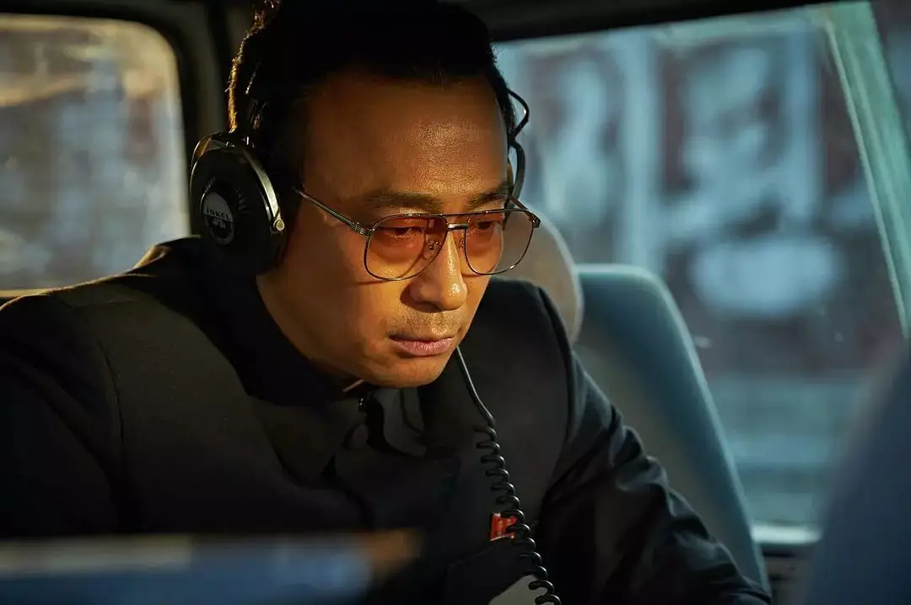
电影中的金正日简直就是皇帝般的存在，要见他一面要经过层层审查，黑金星一路都是被蒙着眼睛带到目的地。
在正式见金正日之前，他还被弄晕进行了催眠讯问。
金正日身边的人都是伴君如伴虎般胆战心惊，都不敢正眼看金正日，他们有个“公开”的潜规则，那就是眼睛要看着金正日衣服上的第二个纽扣，说话千万不能打断金正日的发言。
金正日的两次出场也相当霸气，言语间展现着审时度势、趋利避害的枭雄范，他的呆萌宠物狗也是很大的亮点，原来宇宙真理也有着生活气息。
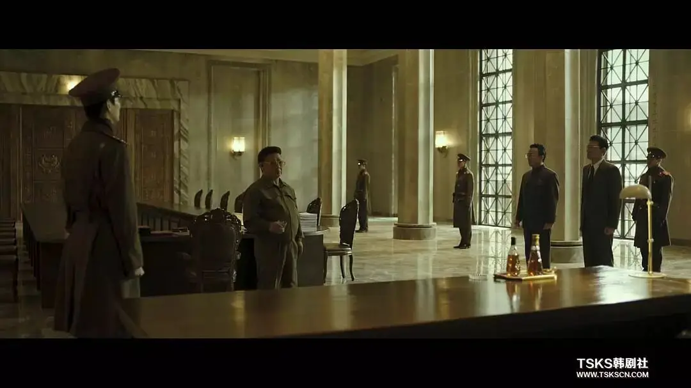
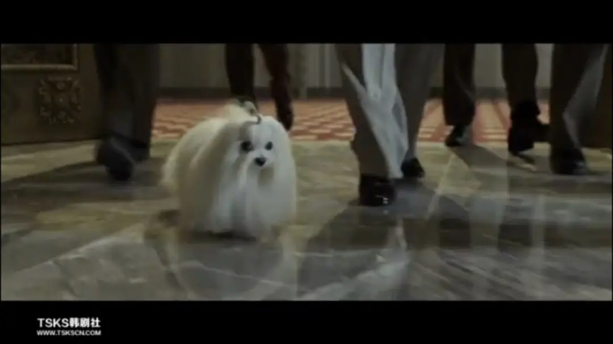
除了对朝鲜的批判，电影也少不了揭露自家的黑历史。
黑金星在调查中发现，当时的韩国执政党为了保证在韩国大选中获胜，不惜出卖国家、愚弄民众。
他们和朝鲜秘密谈判，在大选前让朝鲜对韩国进行武装袭击，借此刺激民众以影响大选结果。
这个事实让黑金星非常绝望，没想到自己牺牲一切所要捍卫的祖国竟有如此龌蹉之事。
他质问崔室长，为什么要这样做。
崔室长则告诉他，“这也是为了国家和民族，你需要放宽胸襟。”
黑金星气愤地反问他“爱国就是爱执政党么！”
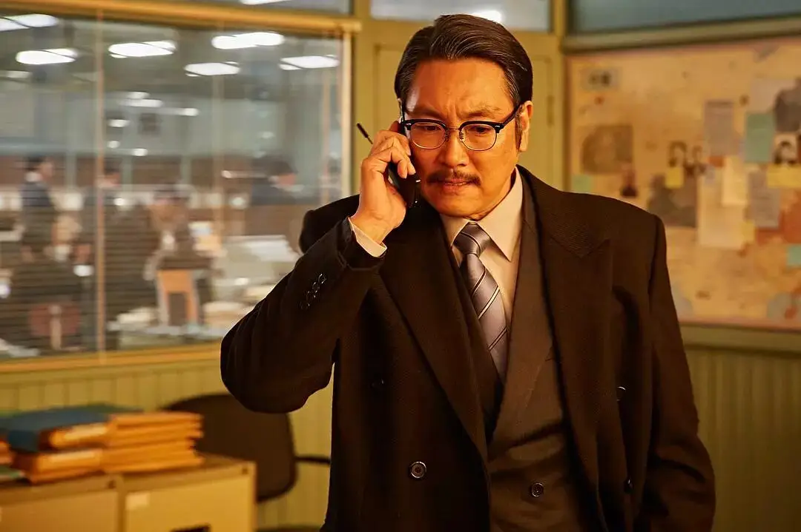
谎言总是如此的相像，越是用爱国主义去俘虏民心和思想的时候，越是黑暗专制的时候。
所以，李处长和黑金星某种程度上很像，他们都用各自的方式坚持着自由、和平的理想。
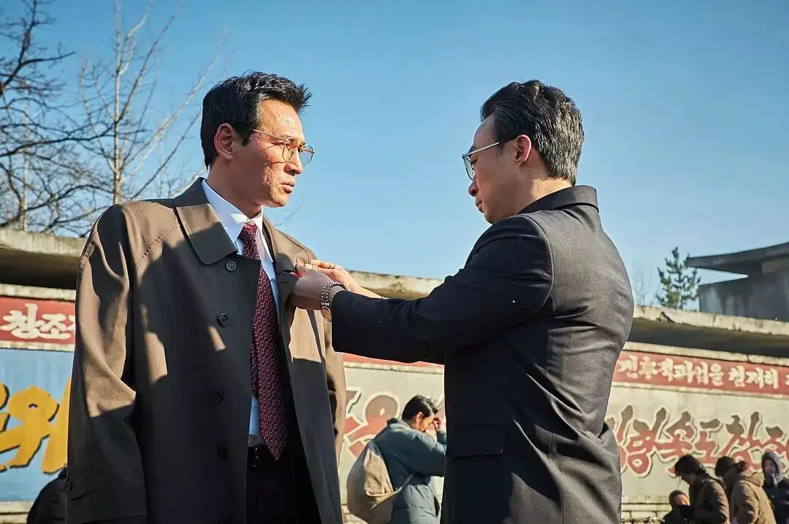
李处长在北京的几年里亲眼目睹了改革开放带给中国的巨变，他渴望朝鲜也能走向开放。
黑金星则希望解决朝核问题来保障朝鲜半岛的和平。
可惜，他们都只是盗国集团眼中的蚂蚁，他们都被傲慢的权力无情地践踏。
最后，两个相互对立的理想主义者竟成为了心照不宣的知己。
最后场景中两人的深情凝望真的非常催泪，饱含了双方对于朝鲜半岛和平统一的强烈愿望。
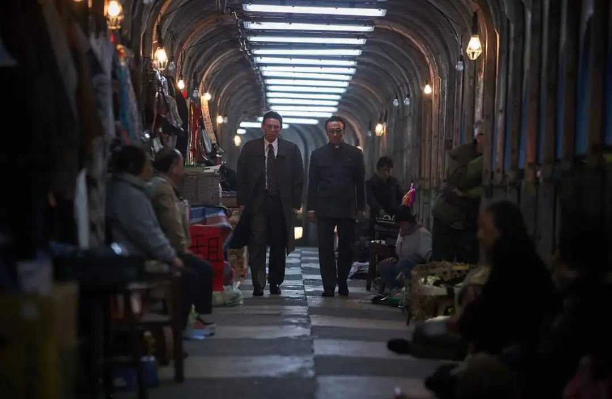
这种催泪不是来自于刻意的煽情，而是建立在扎实的剧情铺垫和创作上。
电影为了较为真实的还原当时的历史场景，在很多方面下足了功夫。
比如嘈杂的北京巷子、中国特色的餐馆、富有时代气息的歌厅，这些都非常符合上世纪九十年代北京城。
还有朝鲜的车站、领袖雕塑、墙壁标语都做的非常逼真，丝毫看不出中国和朝鲜的场景竟是在台湾拍摄完成的。
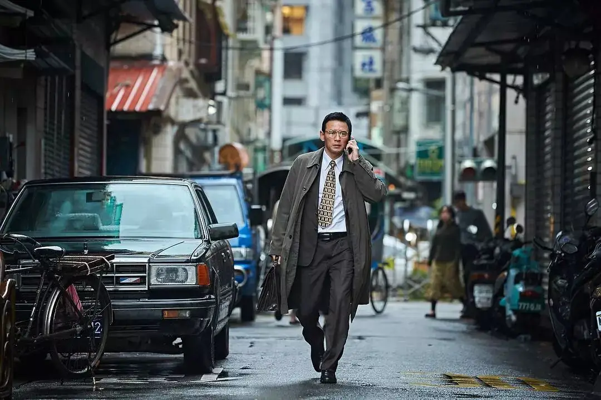
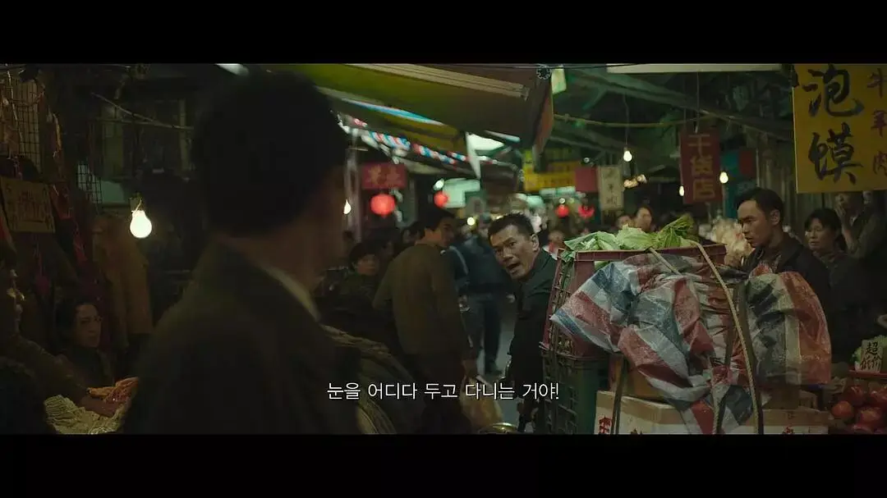
为了让观众产生历史共鸣，导演更是写信给李孝利，请求她出演13年前的自己。
李孝利被导演的诚意感动而答应出演。
于是电影真实还原了2005年的那件大事，韩国李孝利与朝鲜舞蹈家赵明爱见面并一起拍摄手机广告。
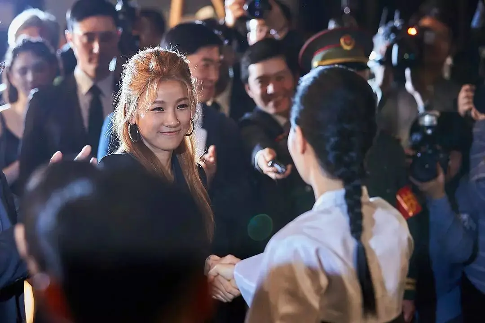
那一幕真的很美。
我相信将来南北韩的统一也一定会成为和柏林墙倒塌一样震撼全世界的奇迹，那个时候，世界上又会少了一个“不正常”国家。
这里没有挑逗你眼目情欲的小鲜肉
也没有挑动你肉体情欲的段子
更没有膨胀你今生骄傲的鸡血
我们只在乎那些最质朴真诚的作品
在那里我们才能恢复真正的想象力
我们也坚信这才是我们真正需要的

ID:Six_hundred_hits
长按二维码，一键关注
【六百击】
-END-
电影评论
尽情分享朋友圈

苹果打赏通道
小提示：文末广告是腾讯配送广告，内容与本号无关，但您的每次点击（无需反复点）都会给平台带来几毛收益，欢迎您点击支持六百击。